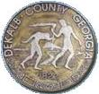

Where to research the 2017 Georgia Elections (political candidates and ballot questions), with DeKalb county examples
Quick and helpful tools for researching candidates and ballot measures for the current elections in Georgia.
Using DeKalb county as an example, I also show you great places to learn more about your local races! With a has a newly-updated quickstart section, this is a detailed follow-up to my introductory post on how to research political candidates.
Start Here (for fast decision-making)
- My Voter Page: provided by the Georgia Secretary of State's offices, gives you:
- A personalized, sample ballot for the upcoming election (you get 3 for primary elections: Republican, Democratic, Non-Partisan).
- Location where you vote (polling place): on election day, but also for early voting.
- List of your elected officials & districts (for state-level offices, not county): which districts, etc. you are in and who holds those offices currently.
- Voter registration forms: for local and overseas citizens.
- Links other Election information: like the date by which you must register in order to vote, when the various types of elections occur (primaries and special elections are especially important!)
- Ballot measures: Great quick summary of the FULL implications of the constitutional amendments and ballot referenda you'll be voting on, instead of just the short, usually unclear questions you see on your actual ballot.
- Voter Guide: provided by the League of Women Voters (LWV) in partnership with the Atlanta Journal Constitution (AJC) (information usually available towards the end of the election season), gives you:
- A personalized, printable ballot of the exact offices, candidates, and referenda you will find on your upcoming ballot.
- Brief candidate answers to LWV interview questions.
- Usually a photo and brief biography of each candidate.
- Sometimes (but not always) has an analysis of referenda pros and cons by the League.
- County Voter page (DeKalb): election results, dates, and other county information.
- My Polling Place (DeKalb): provided by DeKalb County, gives you:
- A personalized, district list of which areas you live in for DeKalb county's: Commission, Super Commission, School, and Super School districts.
- List of your elected officials: who currently holds the offices in your voting districts.
- Debate Videos: Georgia Public Broadcasting co-sponsors televised debates with the Atlanta Press Club.
Non-Partisan
- Project Vote Smart. Offers research on the backgrounds and records of political candidates and elected officials for U.S. Congress and President. You can find their voting records, campaign contributions, public statements, biographical data (including their work history) and evaluations of them generated by numerous competing special interest groups. In addition, the group tests each candidate's willingness to provide citizens with their positions on the issues they will most likely face if elected through the Political Courage Test. Also offers VoteEasy, a fun, interactive game that lets you compare your views with those of your National candidates.
- National Institute on Money in State Politics. Reveals the influence of campaign money on state-level elections and politics in all 50 states. Very useful at the state level, but is not as comprehensive for more local races. For data on money spent in national campaigns, see the Center for Responsive Politics.
- State Bar of Georgia. A professional Association in which all Georgia lawyers must be members, particularly helpful for researching judicial candidates. They often interview, host debates between, and provide attorney's opinions on those trying to become judges. There is often a local bar association, such as the DeKalb Bar Association. DeKalb's association, for example, has a very helpful Newsletter.
- League of Women Voters of Georgia. Encourages informed participation of citizens in government by offering a voter guide (in partnership with the AJC) on the candidates for the current election, as well as links to voter registration, citizen information guides on topics like Georgia government and judicial impartiality, and local educational events. Many counties also have a local chapter.
Government
- State Government of Georgia. Official online portal for the government of Georgia, links to the secretary of state's office (shows your personalized ballots, lists offices to be elected for each year), as well as sites useful in researching the records of incumbent candidates, including: state legislature, state and local courts, state ethics commission, and a site for tracking how Georgia spends your tax dollars. This portal also lists all of the state agencies (which could help you understand what a particular office is responsible for) and links to public broadcasting (a great source for nonpartisan news).
- DeKalb County Government. Official online portal for the government of DeKalb County, it links to the County Voter Registration and Elections Office. An excellent source for making a list of offices you might be voting for, this official voting and elections site of DeKalb County is fairly current, although it usually does not post the sample ballot (PDF) very far in advance of elections due to close candidate registration deadlines. It requires additional web browser plug-ins, but you can also download forms to register to vote absentee, or to become a voter before registration deadlines. It also posts candidate filings for campaign contributions and for financial disclosures. The County portal also links to county sites that are useful for researching local issues and incumbent candidates, such as: schools, commission, ethics board, police, etc.
- U.S. Census Bureau. County and city data book, various years. Collected by various government agencies, these facts can be searched by state, county and city. This online book can be useful in evaluating whether the policies of incumbents have positively impacted statistics you care about, such as: crime, health, home ownership, minority-owned businesses, poverty, etc. Unfortunately its statistics often end about two years prior to today's date and small towns are not considered cities, but it can still be a helpful long-term gauge of the trends in your area. Update: The U.S. Census Bureau discontinued this book, BUT still has links to the state and national sources to get some of this same data, including: Georgia Data (free).
News Media
- Georgia Public Broadcasting: co-sponsors televised debates with the Atlanta Press Club and has nonpartisan, state-level news coverage of elections, including radio interviews with candidates.
- Atlanta Journal-Constitution. Major newspaper source for elections information in Georgia, often produces a voter guide in partnership with the League for elections. Covers state-level races and ballot referenda fairly well, and gives some coverage to county-level races.
- Fulton County Daily Report. The legal organ of Fulton County, this newspaper offers judicial candidate and attorney general interviews/videos and articles that ask well-informed questions, that a non-lawyer might not know to ask. Each candidate for statewide judicial office received a questionnaire, based similar questionnaires before the Georgia Judicial Nominating Commission and the U.S. Senate Judiciary Committee. The online version of this paper requires free registration.
- The Champion Newspaper. The legal organ of DeKalb County, this newspaper offers updates on local DeKalb candidates.
Interest Groups
Often send questionnaires to candidates or ranks their performance on specific issues. An updated list of interest groups is found at VoteSmart.org.
Political Parties
Other Interest Groups
- Budget and Policy Institute. A group focused on financial analysis of the state budget that highlights the importance of a fair and adequate tax system, affordable health coverage, and policies that expand opportunity and economic success for Georgians.
- Christian Coalition. A religious group promoting Christian values and familiy friendly policies that will benefit the citizens of Georgia.
- Equality. Advancing Fairness, Safety, and Opportunity for LGBT Georgians (endorse various state-level candidates).
- Family Law Reform. Working to make Georgia's family laws fair and equitable.
- National Federation of Independent Business. Small business association representing small and independent businesses.
- Protect Georgia. An environmental interest group for Georgia.
- Public Policy Foundation. Limited government, free-market interest group for Georgia.
- Right to Life. Georgia interest group that opposes abortion and euthanasia.
- Sierra Club. Environmental interest group for Georgia, endorses candidates for Dekalb County Soil & Water Conservation District Supervisor.
- WIN List. Group seeking to elect more pro-choice Democratic women to the General Assembly and to statewide office who are committed to reproductive freedom and economic, educational, and legal equality for all women.
Books & Articles
Your local libraries will likely have the following:
- “How to pick school board members: look for involvement, ideas, cooperation.” [Editorial Opinion]. October 10, 2008. The Atlanta Journal-Constitution. A12. This article can be helpful as you are evaluating candidates for the board of education races.
-
Fleischmann, Arnold and Carol Pierannunzi. (2007). Politics in Georgia. Athens, GA: University of Georgia Press. If one can get past the dry, scholarly style of writing and lack of visually-helpful diagrams, this is a very useful book for understanding contemporary politics in Georgia. Of particular interest were the facts about how primary, general, special, and run-off elections work and which interest groups are active and effective at both the state and local levels. A similar and slightly more updated book the 2010 or 2013 edition of Charles' Bullock's Georgia politics in a state of change.
-
Hepburn, Lawrence R. (1991). State Government in Georgia. 3rd Edition. Carl Vinson Institute of Government: University of Georgia. This book is a better starting point than the Fleischmann book, despite its publication date in 1991, as it takes a more basic instructional and less academic tone, includes many helpful diagrams and visuals, and is brief and to the point. This book functions as a basic civics textbook for Georgia voters, one that could lead to a greater understanding of state government on election day.
-
Goldman, Sheldon. (1982). Judicial Selection and the Qualities That Make a "Good" Judge. Annals of the American Academy of Political and Social Science, 462, 112-124. Retrieved October 13, 2008, from JSTOR database.This article is great for helping voters choose criteria to use when deciding between judicial candidates. Goldman recommends the following major criteria for judicial candidates: neutrality as to the parties in litigation; fair-mindedness; well versed in the law; ability to think, write, and speak logically and lucidly; personal integrity; good physical and mental health; judicial temperament; and ability to handle judicial power sensibly. Other criteria that he mentions as potentially important are: administrative and managerial skills; public relations skills with the legal profession, the media, and the general public; political skills with public officials and legislatures; and whether the candidate adds to the diversity of the judiciary. This article goes into some detail about how to identify these qualities in particular candidates. He concludes that, although most of these desired judicial qualities are very subjective, it is important to continue searching for objective ways by which to gauge them.
-
Martin, Mary. (2005). Local and regional government information: how to find it, how to use it. Westport, Connecticut: Greenwood Press. This is a must-read book for learning how to research your local and regional governments. It contains detailed essays by a variety of authors on many topics, including: forms of local government structure; municipal and county codes; local courts; local health services; crime and criminals; parks and museums; education; environmental information; planning and zoning; transportation and public works; budgets, taxes, and revenue sources; and small business loans, grants, and financial assistance.
-
Council of State Governments. (2009). The Book of the States. Lexington, KY. The book helps you find exactly the data you are seeking to learn about elections or to evaluate the performance of your incumbents. It includes such useful information as: compensation, responsibilities, and performance measures for various state offices; budgets; and factual performance measures of such issue areas as healthcare, crime, and education. The chapter on elections, in particular, contains dates of upcoming elections and which offices will be open for those years; a helpful article on interest groups; information on initiatives, referendums, and recalls.
-
Johnson, Nancy P., Elizabeth Adelman, and Nancy J. Adams. (2007). Georgia Legal Research. Durham, N.C.: Carolina Academic Press. This book, written for first year law students, is an excellent resource for the voter who wants to do in-depth research on Georgia candidates who are lawyers or judges. The first chapter on legal research and analysis is particularly helpful at explaining how one might research this rather complicated area. This text also gives pointers on where to find free legal information for Georgia on the internet.